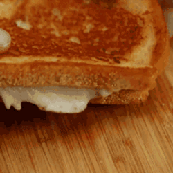

Grilled Cheese Sandwich

Description
It is a dish almost everyone is familiar with. It calls for
simple ingredients, with the opportunity to experiment with
many different combinations!
Ingredients
- 4 slices white bread
- 3 tablespoons butter, divided
- 2 slices cheddar cheese
Steps
- Preheat a nonstick skillet over medium heat. Generously buttter one
side of a slice of bread, Place bread butter-side down in the hot
skillet; add 1 slice of cheese. Butter a second slice of bread on one
side and place butter-side up on top of cheese.
- Cook until lightly browned on one side; flip over and Continue
cooking until cheese is melted. Repeat with remaining 2 slices of
bread, butter, and slice of cheese.
- Serve and enjoy!